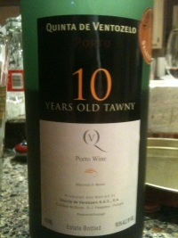

|
Europe >
Portugal >
Douro >
Tawny Porto >
Quinta de Ventozelo >
Porto 10 Years Old Tawny
NV Porto 10 Years Old Tawny
Quinta de Ventozelo
Douro, Portugal

Estate bottled in 2008 and matured in wood.
19.5% alcohol
750 ml

2009 tasting - Red with a tinge of brown, this tawny has a strong alcohol bouquet coupled to a very dry flavor and a long, intense aftertaste that becomes sweet in the finish.
|
|